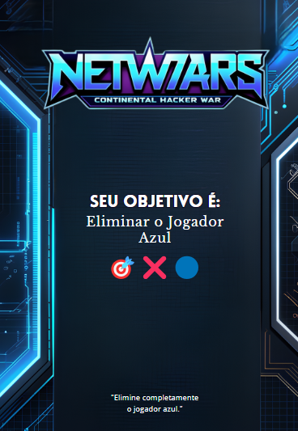
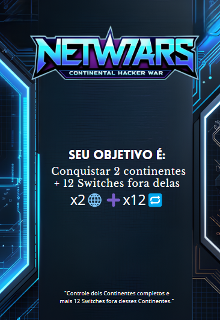
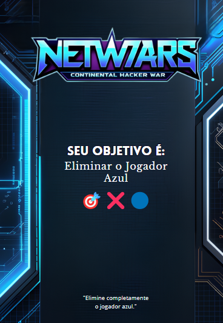
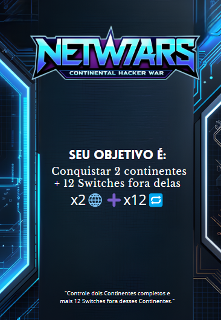

Cartas – Netwars
Cartas de Território (Territory Card)
As Cartas de Território são sorteadas no início do jogo para definir os territórios iniciais e, depois, são concedidas ao conquistar territórios (uma por rodada). Cada carta oferece uma Peça de Satélite. Com duas peças iguais, o jogador pode trocar por uma Carta de Defesa; com quatro diferentes, monta um Satélite e libera um ataque orbital
Cartas de Objetivo (Object Card)
As Cartas de Objetivo são entregues no início do jogo e atribuem missões secretas, como conquistar regiões específicas ou eliminar um adversário. Cumprir a carta garante a vitória. Como os objetivos são ocultos, os jogadores precisam agir com estratégia e disfarçar suas intenções durante a partida.
 



Cartas de Perguntas (Question Card)
As Cartas de Perguntas desafiam os jogadores com questões sobre o tema do jogo. Respostas corretas garantem vantagens como ganhar territórios ou cartas extras, enquanto erros podem trazer penalidades. Elas tornam o jogo mais dinâmico e desafiador.


Cartas de Defesa (Defense Card)
As Cartas de Defesa fortalecem a proteção dos territórios contra ataques. Para conseguir uma, o jogador precisa trocar duas Peças de Satélite iguais, o que torna essas cartas limitadas e valiosas. Usá-las com sabedoria é fundamental para manter a vantagem no jogo.